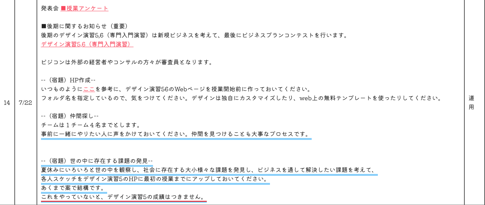
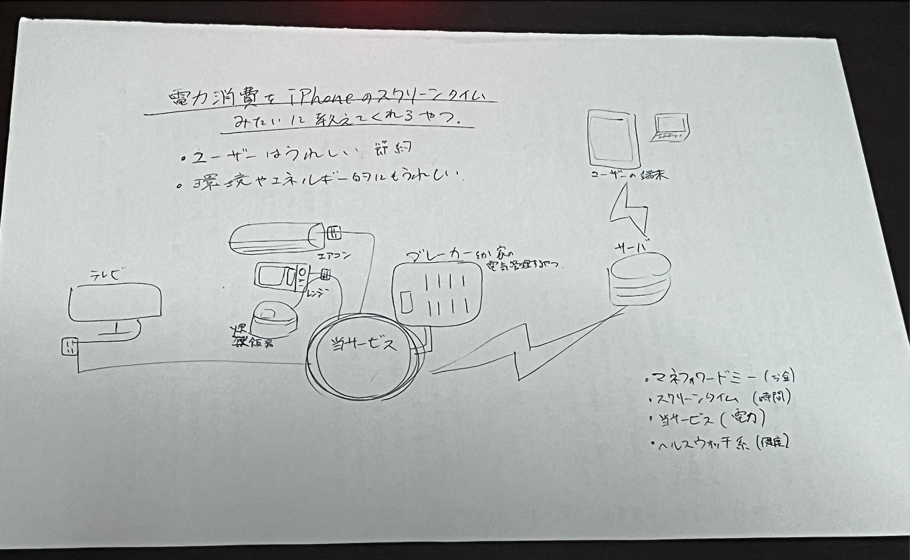
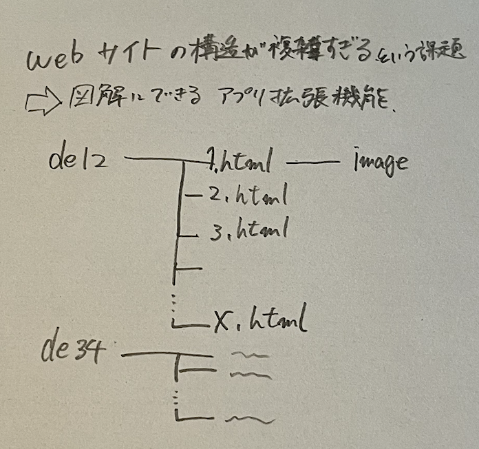

初回授業までの宿題
↑https://kuxbp.github.io/xbp/xbp2023/design_e34/の宿題の項目に飛びます）
20240725時点での宿題

宿題1 HP作成
de5用にWebページを作ること
宿題2 仲間探し
1チーム4名まで。夏休みのうちに仲間を見つけておく。
宿題3 世の中に存在する課題の発見
夏休みにいろいろと世の中を観察し、社会に存在する大小様々な課題を発見し、ビジネスを通して解決したい課題を考えて、
各人スケッチをデザイン演習5のHPに最初の授業までにアップしておいてください。
あくまで案で結構です。
これをやっていないと、デザイン演習5の成績はつきません。
宿題「世の中に存在する課題の発見」
スケッチ↓

各家庭個人に個人に自身が消費した電力を教えるサービス
スケッチ↓

各家庭個人に個人に自身が消費した電力を教えるサービス